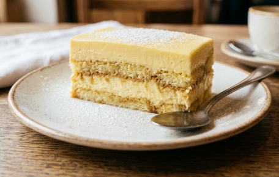

Tiramisu Citron

Recipe's description
The tiramisu citron is a variant of the classic tiramisu but with citron (lemon). The recipe fits more for the summer season since it is also the citron's season.
The difference in the steps is just a citron cream that we will add between the layers of biscuits and a more colorful and maybe sweeter at the top
Ingredients
- 20 biscuits
- 3 eggs
- 70g sugar
- 250g mascarpone
- 1 bio lemon zest
- 200ml Limoncello or lemon juice
Steps
- Separate the egg whites from the yolks
- Whisk the yolks with the sugar until the mixture turns pale, then fold in the mascarpone and lemon zest.
- Beat the egg whites until stiff peaks form and gently fold them into the mascarpone mixture
- Mix the lemon juice and limoncello in a shallow dish
- Quickly dip the biscuits into the liquid and arrange them to cover the bottom of a dish
- Spread a layer of the mascarpone cream over the top, then repeat the process (biscuits followed by cream)
- Refrigerate for at least 4 hours before serving
Navigate